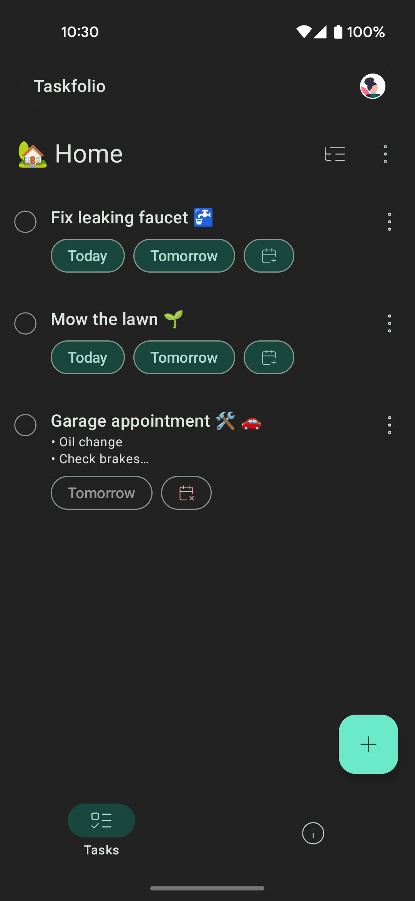

Taskfolio
Taskfolio is a personal project designed to showcase my Android development skills. The app is a lightweight task manager that integrates with Google Tasks through its REST API, adhering to a clean and modern MVVM architecture. I’ve used Kotlin Multiplatform, Jetpack Compose and Material Design 3 to create a smooth and visually appealing UI, while also incorporating Room for local data persistence and OAuth 2.0 for secure authentication.
This project highlights the breadth of my Android knowledge, from API integration and UI design to database management and CI/CD setup. It’s designed not just as a functioning task manager, but as a demonstration of my ability to deliver well-structured, maintainable, and scalable Android apps.

 |
 |
 |
 |
üéØ Project intentions
- Showcase my expertise in Android application development
- Demonstrate UI development using Jetpack Compose with Material Design 3.
- Include local-first capabilities for local data storage using Room.
- OAuth 2.0 authentication.
- Provide sync capabilities with Google Tasks for seamless task management.
- Illustrate my ability to set up CI/CD pipelines and publish apps to the Play Store.
❌ Out of scope
This project is not intended as a comprehensive task manager for public use. I do not aim to implement advanced features beyond what is supported by the Google Tasks REST API.
- no task list reordering
- no starred task
- no task priority
- only due date, no custom time support
- no task recurrence
- limited hierarchy (2 levels)
üöß Known Limitations
- Authentication flow isn’t 100% reliable yet (#34).
- Local-first support with Google Tasks sync is limited, in particular sorting & conflict management is barely implemented (#140).
- No indentation support (ongoing) (#129)
- Task completion state toggle doesn’t honor indentation properly (ongoing) (#175)
- No drag’n’drop to re-order tasks nor move them between lists (#133).
- Task deletion undo is not implemented (#149).
- Local action sync failure might not be synced again (#150).
- Setting due date is partially supported (#155).
üõ†Ô∏è Tech stack
- Kotlin, Multiplatform (aka KMP) (currently Desktop & Android are supported)
- iOS & Web are not planned any time soon (contribution are welcome ü§ù)
- Kotlin coroutines
- Ktor client (+ Kotlinx serialization)
- Room for local persistance
- Koin for dependency injection
- Material Design 3 Components
- Jetpack Compose, Multiplatform (aka CMP)
- Kinda follows Google architecture guidelines
- Coil
- GitHub Actions for CI
- build Android & Desktop apps
- run tests
- compute code coverage & check threshold
- publish app on Play Store
- publish companion website on Github pages